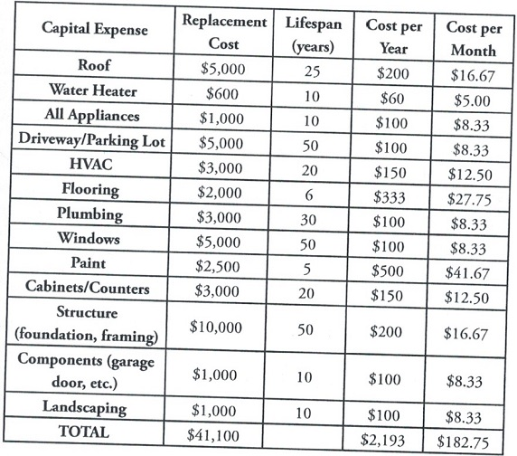

Also known as CapEx, capital expenditures are those expensive "big ticket" items that need to be replaced every so often, but not every month or year. This could include roofs, appliances, driveways, plumbing systems, or any other large item you should budget for. Many people ignore the CapEx in their analysis, which I feel is a mistake. After all, if you were to earn $100 per month in cash flow for ten years ($12 000) and then needed to put on a new roof for $12,000, what did you really accomplish in those ten years?
CapEx is difficult to estimate because it depends on the condition and age of your property. However, you can sit down and estimate how many years a roof will last, how many years an appliance will last, what the condition of your plumbing is, what a new driveway will cost, and on – and then divide these out by the number of years.
To estimate the total CapEx, you should set aside, start by listing every "big ticket" item that might need to be replaced in the next 20 years. Use the following chart to get started but understand that your area might have different expenses than these.
The following chart lists 13 of the major capital expenditures that a typical property has, then looks at the total replacement cost for that item and how long that item will likely last. This tells us how much per year we should be saving to replace that item. We can then break that figure down into a monthly price.

According to this chart, then, we should be setting aside $182.75 per month for CapEx. However, there are limitations to estimating capital expenditures this way. This chart assumes that everything was brand new when the property was purchased, but what if the plumbing only has a few years left? What if the paint is peeling, so the property needs new paint next year? Although the average of $182.75 might be true over the long run, if starting today, you only saved that much each month, and then you were hit with a $5,000 bill for a roof replacement next year, you wouldn't have enough cash set aside to cover it. Again, the $182.75 in this chart, is just an example for one fictional property. Each item may cost more or less for you. You may have expenditures that I didn't list. The point of this chart is to merely show how to calculate CapEx for a property.
I have one final note about CapEx: notice that the chart we presented wouldn't change much if the home were a $500,000 property or a $25,000 property. Sure, you might need to replace more windows or a bigger roof, but this differential is not as large as the cost difference between a $25,000 property and a $500,000 property. (In other words, just because a house worth $500,000 is 20 times more expensive than one that is $25,000, that doesn't mean a roof, windows, paint, or anything else will also be 20 times more expensive.) What this means is that CapEx is a much greater percentage of the income, the lower the property value. On a home that rents for $2,000 per month, the CapEx of $200 per month is 10% of the income, but on a home that rents for $600 per month will be 30% of the rent. Just keep this in mind when you run an analysis on a property.